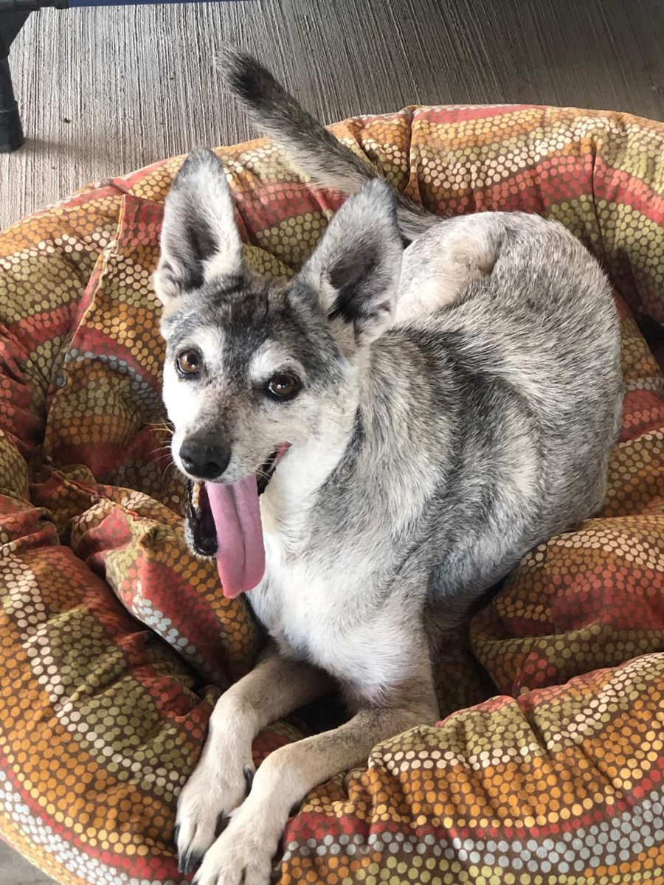

About Tail End Sanctuary
A home for senior street dogs in the Lake Chapala area of Mexico — where a dog's last years are spent safe, comfortable, and loved.

One dog led to another
In our community, the Lake Chapala area of Mexico, people kept identifying older stray dogs living on the street on their own — dogs who were no longer young, unwanted, and often struggling just to get through each day.
They were easy to overlook but impossible to forget once you truly saw them.
What started as concern turned into action. One dog led to another, and it became clear that these senior dogs needed something different — something beyond traditional rescue.
Our focus is on the quality of each dog's remaining time. For many of the dogs who come to us, this is the first time they experience consistent kindness. The first time somebody notices they are in pain. The first time someone stays.
We measure success in peaceful days.
Three people, one promise
Brought together by a shared concern for senior dogs.

Jena Marie Olio
Over 20 years in dog rescue and training, Jena runs a sanctuary for dogs whose owners have passed away. She has long been dedicated to caring for senior dogs in their final stage of life.

Ronni Coppola
A lifelong dog lover who has rescued and fostered some of the most vulnerable dogs in the community. Her compassion and hands-on care make a daily difference in the lives of our dogs.

Juanita Crampton
Founder of the Tail End Planning program, helping pet owners prepare for their animals' future care. Her work led to a deeper focus on senior stray dogs and the creation of the sanctuary.